Jak se žije švédský sen
Publikováno 30. 9. 2019 (20:03) v kategorii Život ve Švédsku • Autor Knut Holm • Přečtete za 6 minut
Malý, útulný, dřevěný domek někde na venkově, natřený načerveno - naprostá švédská klasika, kterou zná snad každý, kdo alespoň letmo někdy zaslechl o Dětech z Bullerbynu. Typičtější švédské bydlení zkrátka neexistuje. Tato dodnes velmi oblíbená a poptávaná forma bydlení je pomyslnou metou pro splnění si jakéhosi švédského snu. Nám se podařilo takové bydlení sehnat spíše omylem, přesto jsme z něj však nadšení stejně jako všichni ostatní, kteří o něm již dlouhá léta básní a sní. A jak se tedy žije takový švédský sen? Dovíte se v tomto článku.
Nutno podotknout, že náš dům se nachází na ostrově Tynningö (čte se [týnyngó]) a život na ostrově jako takový má svá nemalá specifika. V tomto článku se chci však soustředit pouze na popis bydlení samotného, takže pokud vás zajímá, jak se žije na ostrově, počkejte si na další článek. Rovněž jsem již před nějakou dobou napsal článek o tom, jak se ve Švédsku bydlení hledá - a na ten nyní trochu navážu.
Kde se vzal nápad bydlet v domku na ostrově
Když jsme obdrželi výpověď našeho nájmu ve Vällingby, padl na nás stres spojený s hledáním nového bydlení, což není ve Stockholmu úkol zrovna jednoduchý. Největší naděje jsme vkládali v oficiální bytovou frontu, kterou jsme denně projížděli a rovněž sledovali několik front komerčních. Stále nám zbývalo poměrně dost času, nicméně úspěch byl v nedohlednu.
Byla neděle na začátku května, my jsme se právě vrátili z jedné z posledních procházek po lesoparku Grimstaskogen a doma byl poměrně nepořádek. S vidinou toho, že za chvíli půjdou stejně všechny věci do krabic, jsme si sedli demotivovaně na gauč a ve snaze zahnat černé svědomí ze zanedbaného úklidu jsme si řekli, že alespoň budeme hledat bydlení. Tentokrát jsme zamířili na švédský portál Blocket, což je obdoba českého Bazoše a dá se tam sehnat úplně všechno. Věděli jsme, že na jeden byt připadá nejméně 200 zájemců a že šance jsou velice malé. Pustili jsme se tedy do pro nás absolutně neznámých vod a s jistotou stálého příjmu v podobě dvou platů jsme se rozhodli místo bytů hledat k pronájmu menší domky.
Náš předem pečlivě připravený motivační dopis ve švédštině, který letmo popisoval celou naši rodinu včetně kocourů, což je při hledání bydlení starost navíc, jsme ten den nakonec odeslali jako odpověď na zhruba pět domkových inzerátů. A pak začal sled těch nejméně pravděpodobných událostí, které jsme si v tu chvílí uměli představit.
Obrovská náhoda
Ještě ten den večer jsme obdrželi odpověď z úplně prvního inzerátu, na který jsme ten den odpověděli. Byl to rovněž úplně první domkový inzerát, který jsme kdy na Blocketu otevřeli a shodou okolností to byl rovněž náš nejvíce favorizovaný inzerát. Majitel domku píše, že na pronájem spěchá a že už má šest dalších vážných zájemců. Nicméně, náš motivační dopis se mu líbí natolik, že by se s námi rád setkal. Zve nás na prohlídku hned druhý den v pondělí a my souhlasíme. Večer probíhá fantazírování ohledně života na ostrově.
Druhý den jsem v práci jako na trní a nemůžu se soustředit vůbec na nic. Celý den hledám informace o ostrově a jeho okolí, protože chci vědět, do čeho jdeme. Večer tyto znalosti uplatňuji v rozhovoru s majitelem domku, na kterého evidentně můj průzkum udělal docela dojem. Majitel se jmenuje Magnus a domek je na stejném pozemku, jako jeho nový dům, který si sám postavil. On je nadšený z nás a my jsme naprosto nadšení z prohlídky. Podáme si ruce a domluvíme se, že si dáme ještě ten večer vědět.
Náš dojem je velmi pozitivní a znovu se bavíme o životě na ostrově, tentokrát už naprosto reálně, protože cítíme, že by to mohlo dopadnout dobře. Za dvě hodiny volá Magnus, že nás bere. Ještě trochu v šoku jeho nabídku přijímáme a voláme stávajícímu majiteli, že dáváme výpověď dříve, protože stěhovat se budeme už na začátku června. Nájmy se nám celý červen překrývají, takže času na stěhování je dostatek.
Ještě jedno auto, prosím
Jedna sklenička na oslavu samozřejmě večer padla, ale na velké slavení není moc času, protože jsme museli akutně začít řešit náš další problém: na ostrově se neobejdeme bez auta, které nemáme a na které nemáme ani peníze. Protože je však nový nájem o 4000 SEK levnější než náš nájem stávající, auto v pohodě uživíme i s úvěrem, který si nakonec výhodně sjednávám přes své odbory Unionen. Zbývalo si vybrat a koupit vůz, s čímž nám naštěstí pomohl kamarád (díky Ondro!), protože jinak bychom byli úplně ztracení. Ještě ten samý týden v pátek kupujeme auto a v sobotu podepisujeme nájemní smlouvu. Pak nastala ta nejotravnější fáze celé akce, a tedy stěhování samotné, se kterým nám naštěstí rovněž pomohl kamarád stěhovák (díky Mladene!). No a od června je naše nová adresa na ostrově Tynningö!
Byrokracie na švédský způsob
Znalí českých poměrů se teď nejspíše divíte, jestli tím veškerá otrava skutečně skončila. Přestože stěhovacím krabicím se pochopitelně ani ve Švédsku nevyhnete, byrokracii spojené se stěhováním se naopak vyhnete téměř zcela. Změna dokladů není nutná a změnu adresy vyřídíte jednoduše během pěti minut přes internet, přičemž veškeré státní i soukromé instituce tuto informaci samy převezmou od příslušného úřadu. Pokud navíc zaplatíte poště pětikilo za celou domácnost, bude vám zdarma přeposílat po celý rok veškerou poštu ze staré adresy na novou.
Typicky švédský domek
Chápu, že všichni netrpělivě čekáte na fotky, takže už se nebudu dál vykecávat a přejdeme rovnou k věci :-)
Z hlavní silnice vede na sever k moři cesta k molu Åkeshov (čte se [ókešhov]), která se využívá ke spouštění lodí na vodu. První odbočka napravo je příjezdová cesta k našemu domu. V zimě se tato cesta neudržuje, takže nás čeká odhazování.
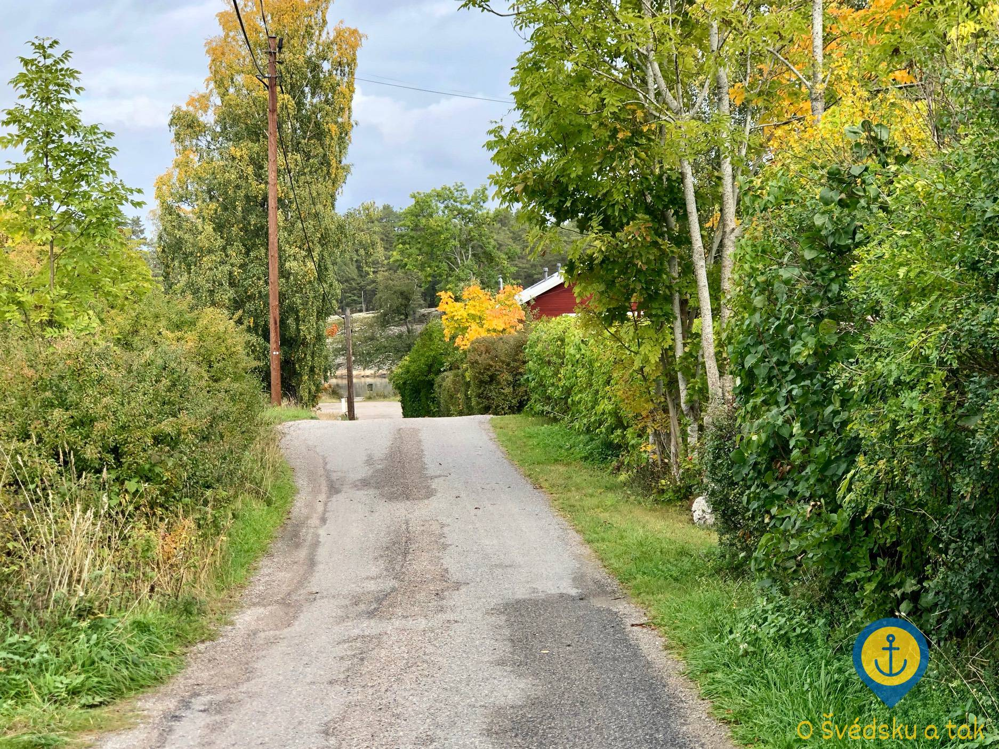 Příjezdová cesta k molu Åkeshov, napravo vede příjezdová cesta k našemu domu
Jakmile na ni odbočíte, uvidíte ihned náš domek. Nalevo od domu se nachází soukromý pozemek pro parkování, kam se vlezou až tři automobily.
Domek samotný je patrová dřevostavba určená k celoročnímu obývání, takže je velmi dobře zateplená - narozdíl od ve Švédsku velmi oblíbených letních sídel, které se nezateplují.
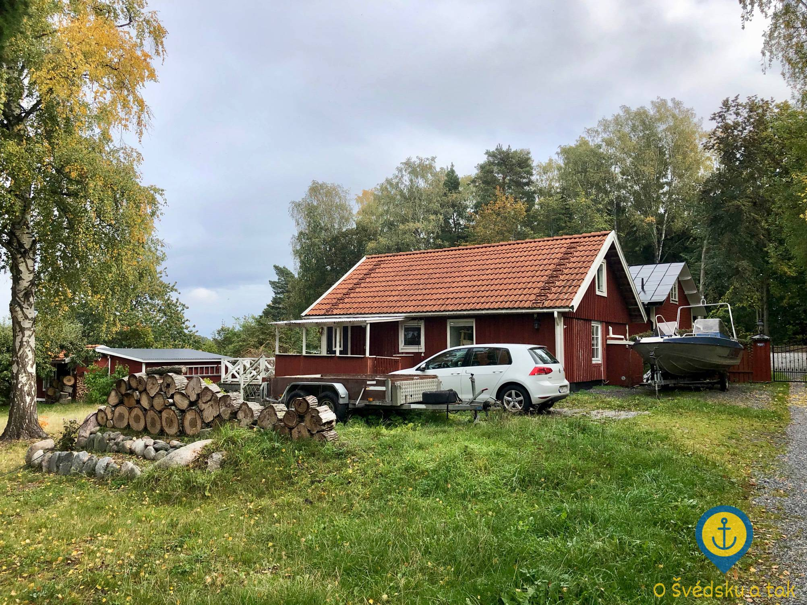 Náš dům - pohled směrem na jihovýchod
Vstup do domku je řešen přes zastřešenou verandu, která jde v létě využívat k posezení a grilování i za nepříznivého počasí.
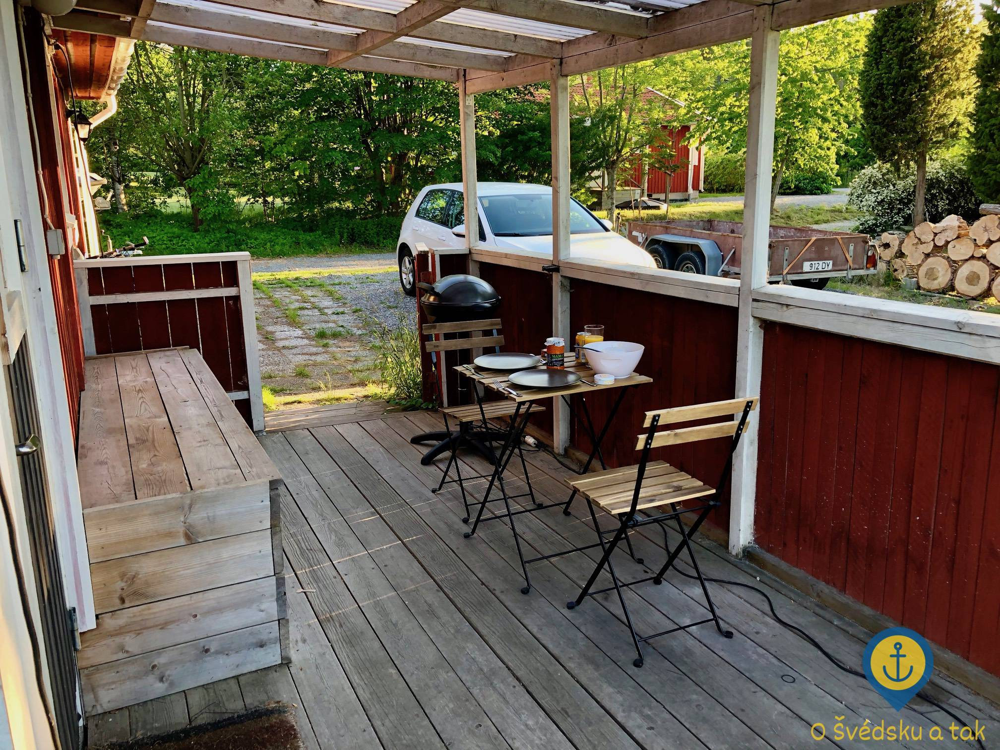 Zastřešená veranda a hlavní vchod do domu
Další, prostornější veranda, je situována na sever a nabízí dostatek prostoru pro plnohodnotné venkovní posezení i opalovacích lehátek pro těch několik málo slunečních dní, které obyčejně švédské léto nabízí.
Dům nabízí obytnou plochu 63 m2 a dispozičně je řešen jako 4+kk. Jedna malá ložnice se nachází v přízemí, další dvě ložnice (se zkosenými stěnami) najdeme v patře, přičemž jedna je průchozí.
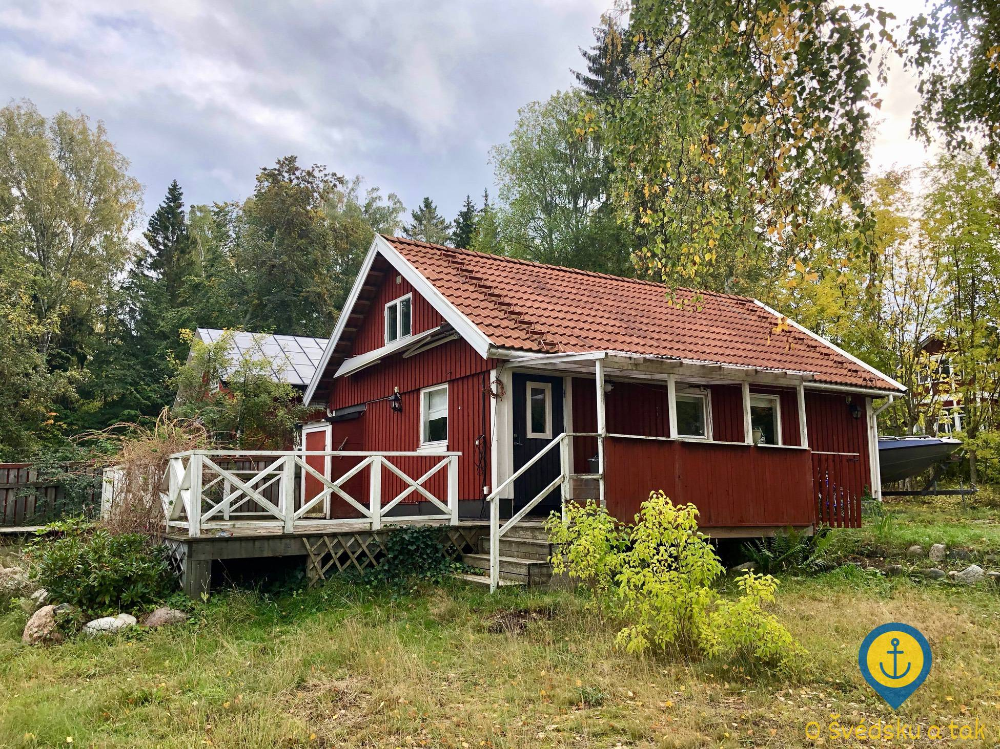 Náš dům - pohled směrem na jihozápad
Od domu je to asi dvě minuty pěší chůzí k moři, kde se nachází písečná pláž a molo pro několik desítek lodí. Přes léto je to naše oblíbené místo ke koupání, teď na podzim zase prostor pro chvilky strávené se sklenkou vína při nádherných západech slunce. Rovněž je krásné si tam jen tak sednout na lavičku, nechat se houpat na vlnách a číst si nebo se prostě jen kochat těmi nádhernými výhledy a spoustou vody kolem.
 Pláž a molo Åkeshov
Pláž a molo Åkeshov
Do domu se vchází hlavními dveřmi z malé verandy do prostorné předsíně, ze které vede rovněž rohové schodiště do patra.
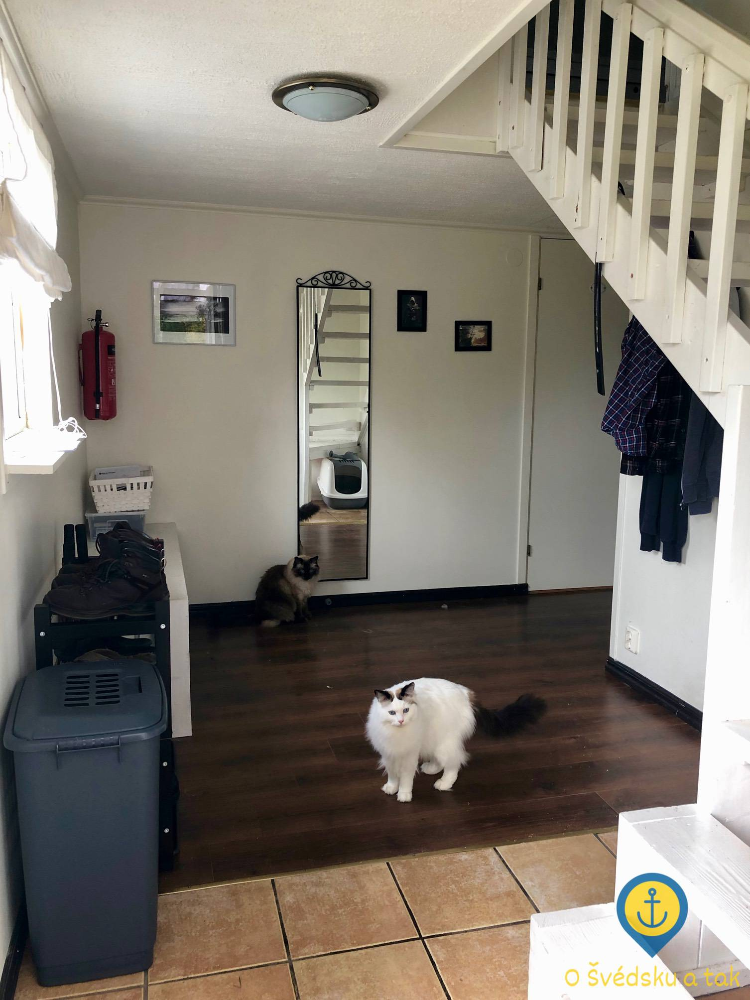 Předsíň, chodba a schodiště
Hlavní chodbou se dostaneme přímo do hlavní obytné místnosti, kde se nachází kuchyně, jídelna a obývací pokoj.
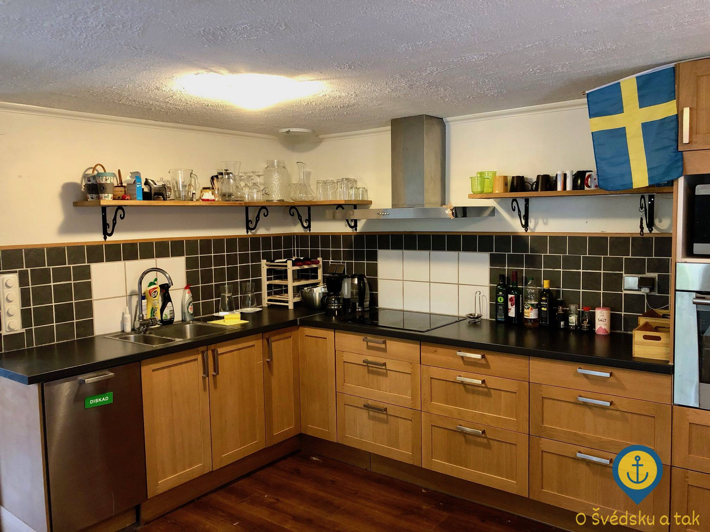 Kuchyň
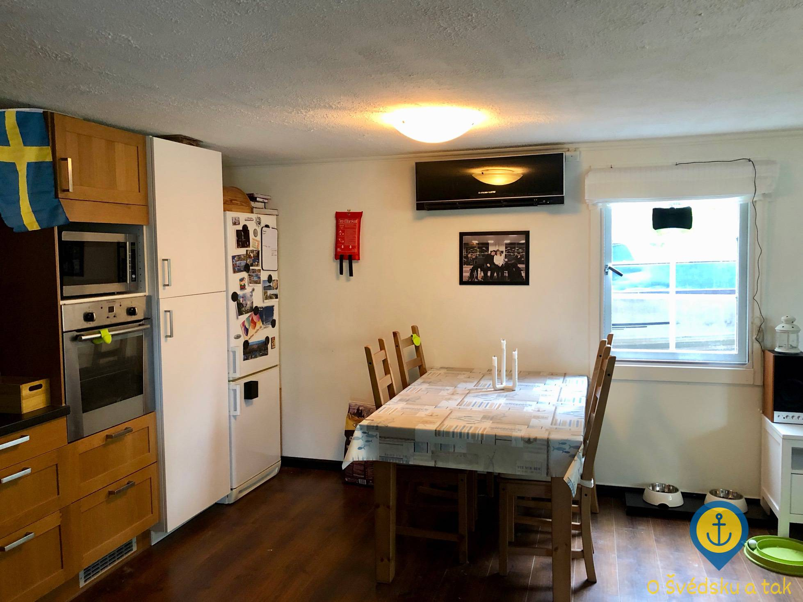 Jídelna
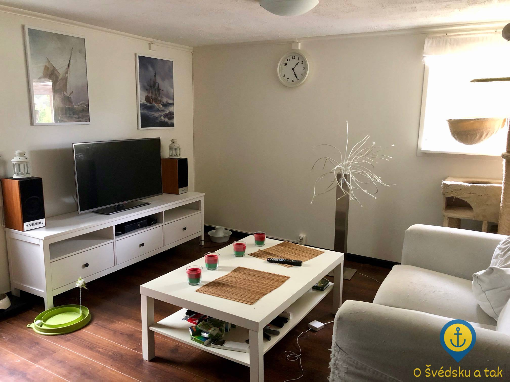 Obývací pokoj
Pravé dveře vedou do malé přízemní ložnice, kterou jsme předělali na šatník s malým kumbálem.
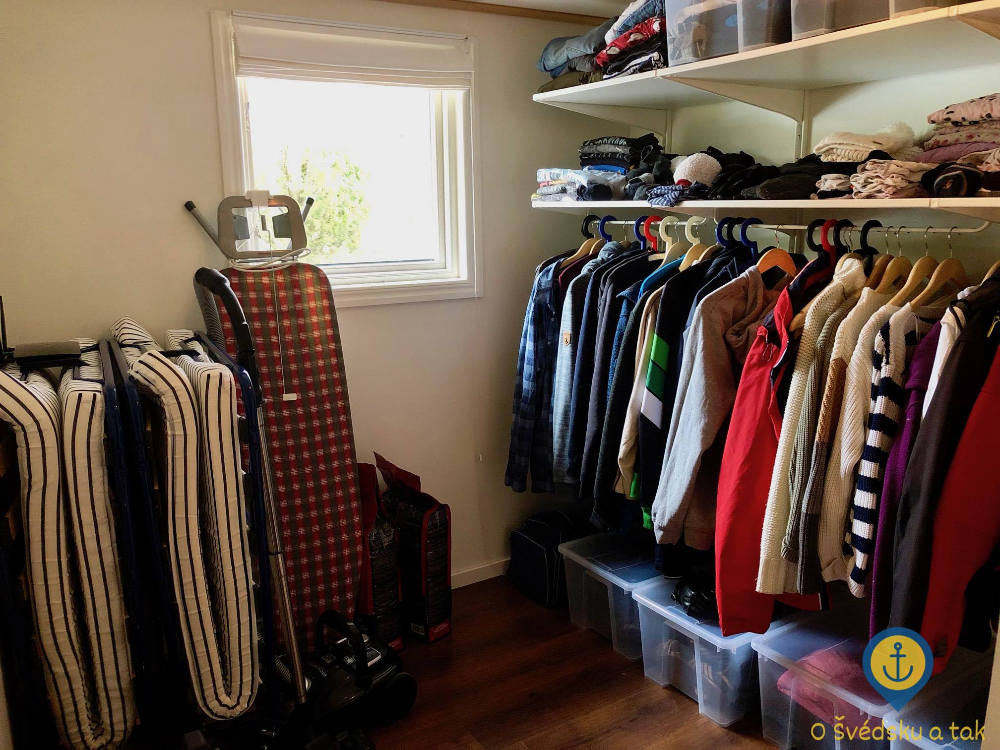 Kumbál se šatníkem
Levé dveře pak vedou do koupelny, kde se nachází prostorný sprchový kout, sušárna prádla, pračka, umývárna a také jedna skandinávská specialita - ekologická toaleta Separett.
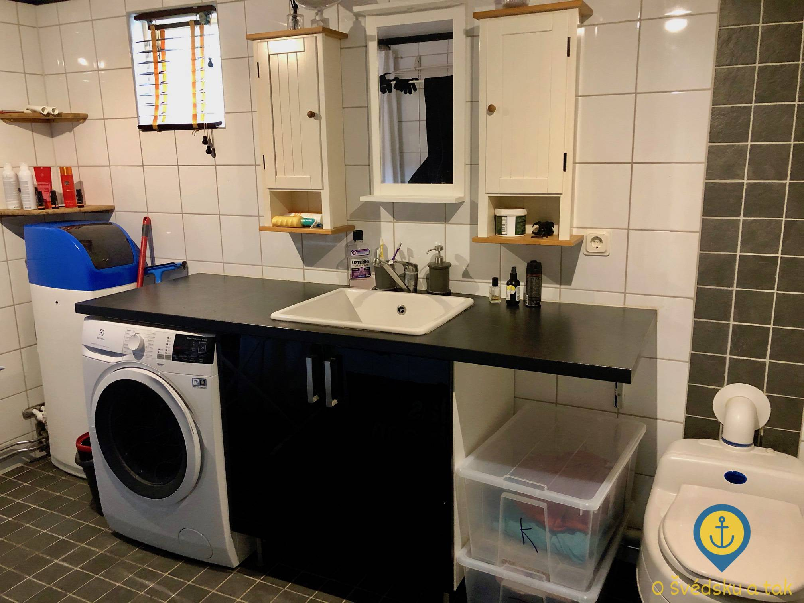 Koupelna
Pokud vystoupáme po schodech nahoru, dostaneme se do druhé (průchozí) ložnice, která momentálně slouží jako pracovna a příležitostně také jako pokoj pro hosty. Pod zkosenými stěnami se nachází dostatek úložného prostoru.
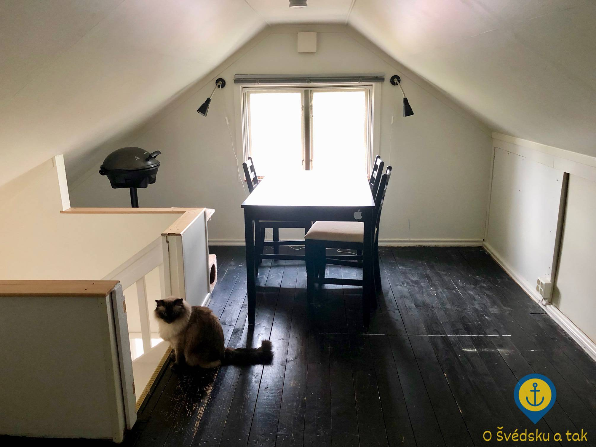 Druhá ložnice v patře, která momentálně slouží jako pracovna
Za dveřmi se poté nachází hlavní ložnice domu, kterou obýváme my. Pod zkosenými stěnami se rovněž nacházejí úložné prostory.
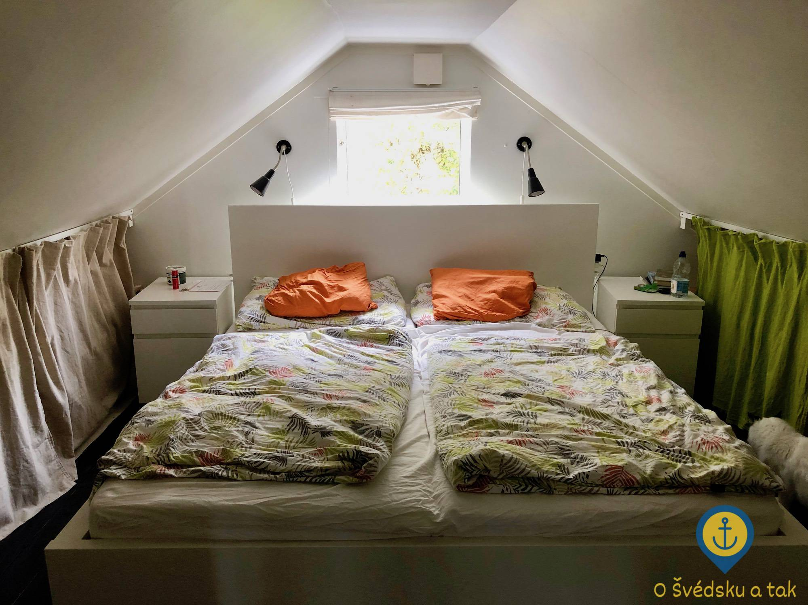 Hlavní ložnice v patře
Co víc si přát
Závěrem chci říci, že jsme si nové bydlení zamilovali a že jsme hrozně rádi, že zde máme konečně smlouvu na dobu neurčitou. Nějaký ten rok se teď stěhovat nechceme a doufám, že ani nebudeme - totiž, naděje je veliká, žádné BRF nad námi tentokrát nebdí.
A jestli chcete i vy vidět a zažít kus toho opravdového Švédska na vlastní kůži, stavte se na návštěvu, rádi vás uvidíme! Mezitím si tady v klidu budeme dál žít náš švédský sen :-)